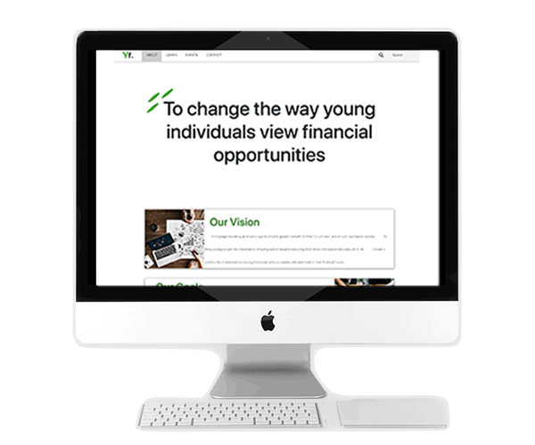
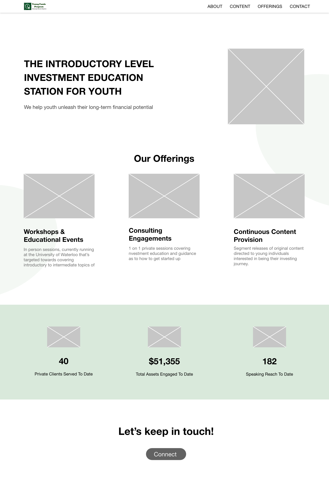
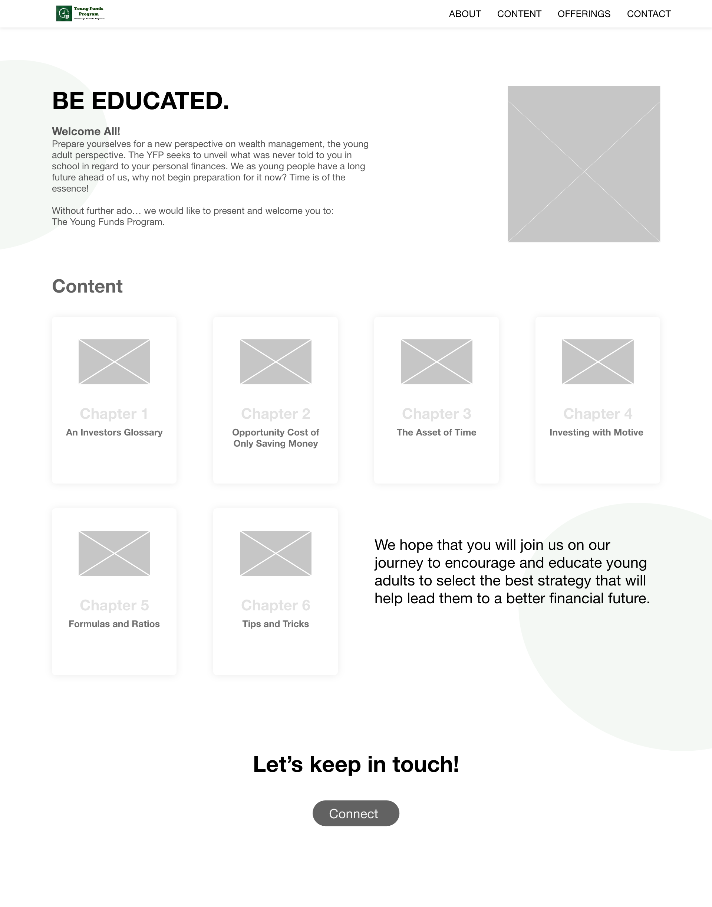

Yong Funds Program
Redesign of client's financial education website.
The problem
Young adults lack financial education
More than three-quarters of students (approx. 76%) report that they wish they had more help
preparing for
their personal finances. Young Funds Program (YFP for short) is a student-run initiative aimed
towards
developing financial literacy, specifically investing experience, in young adults.
This website redesign was our final deliverable for a course. During the 3-month process, the 4 of
us
critiqued and presented a research-driven website redesign to educate young adults on financial
literacy.
YFP overview
What are our client's needs/goals?
Our goal was to present a redesign of the current YFP website, with regards to
their three primary goals.
After speaking with Travis, we sorted our findings into 3 categories. For each goal, we brainstormed
follow-up questions on why that goal matters to both the audience and YFP, benchmarking how is it
currently being achieved, and how it can be improved.
User research
Who are the 'young adults'?
To get a better understanding of exactly who we’re designing for, I interviewed and complied data on my friends. I wanted to get insight on what would they want to see based on their current level of financial literacy.
Experienced investor

Just getting started

The curious

Pain points
Website critique to find opportunity areas
After individually critiquing the website, we asked two from each audience segment for their opinion as well. We concluded the main pain points to be:
Unprofessional look & feel

Inconsistent design style and choice of animation causes the site to appear unprofessional and outdated.
Unorganized content

Duplicate and unorganized content all over the site. Lack of whitespace and borders makes the site look cluttered.
Usability difficulties

Inconsistencies and complicated nested navigation menu makes the user journey difficult.
Information architecture
De-cluttering navigation with sitemaps
The first step was to produce a sitemap, targeting pain points #1 and #2. The goal was to map out the information architecture and how to guide user flow.

Wireframes pt.1
Individual ideation to avoid group think
We individually developed low-fidelity wireframes for each page. The challenge was how to create an improved platform that brings value to all three audience segments, while keeping in mind of YFP’s goals.
Homepage

• Landing page shows high-level overview of YFP's offerings, making it easily scannable within a
15-second metric.
• Offerings and their success stats, which boosts accountability and user engagement (Goal #1).
Contents page
• CTA is added at the bottom of every page to guide the user flow and increase engagement (Goal #1)
Wireframes pt.2
Group critique in breakout rooms
As a group, we combined our designs to produce two iterations and conducted 4 rounds of A/B testing.
Wireframe A

Wireframe B

Handoff
Final tweaks before development
We conducted a few rounds of user testing and made changes accordingly. The main feedback points
we
received was that there is too much going on, testers were unsure which part of the site to
focus on
first and kept getting distracted by other elements. Based on the feedback, we made the
following
changes:
• Tone down the neon green to darker forest green, used sparingly to add emphasis rather than
as backgrounds
• Increase padding to separate sections and child elements to improve readability and
hierarchy
• Simplified navigation menu by removing duplicate social media icons
Final wireframes

Takeaways & reflection
What did I learn from this?
Design with the client's objectives in mind
Throughout the entire process we found ourselves asking "does this align with YFP's goal?" and "will this design get the message across?". This project highlighted that a visually aesthetic website brings little value if it does not meet business goals and it's corresponding success metrics.
Giving insightful criticism and feedback
This project involved A LOT of group critiques, which gave me the opportunity to reflect on my communication skills and find Shelia Heen's Ted Talk (highly recommend her book 'Difficult Conversations' as well). Although I believe I can emphasize and give feedback without offending, I wanted to research and learn more about it.